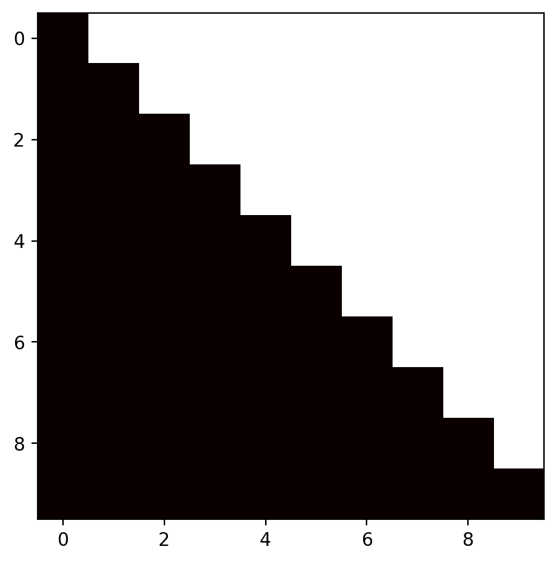
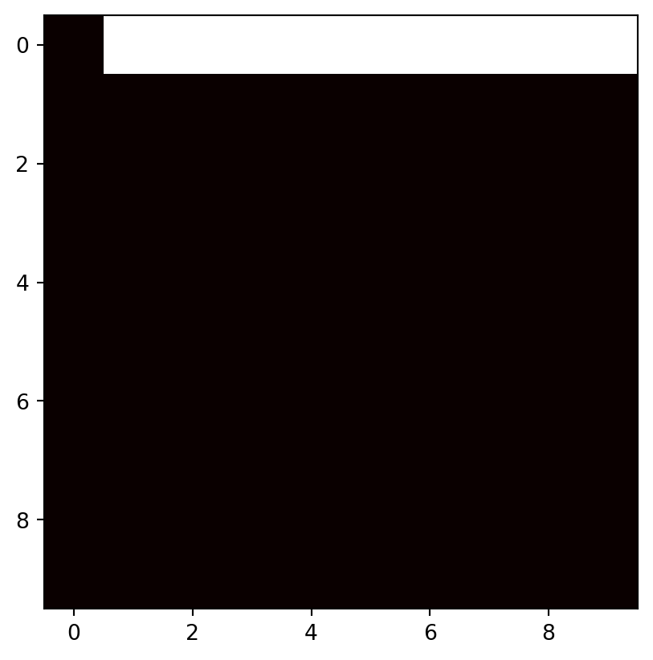
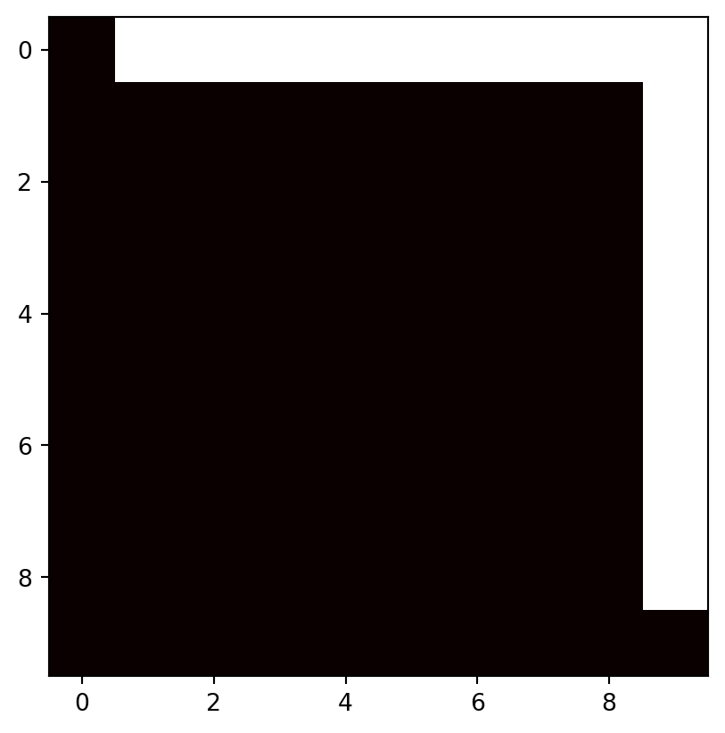
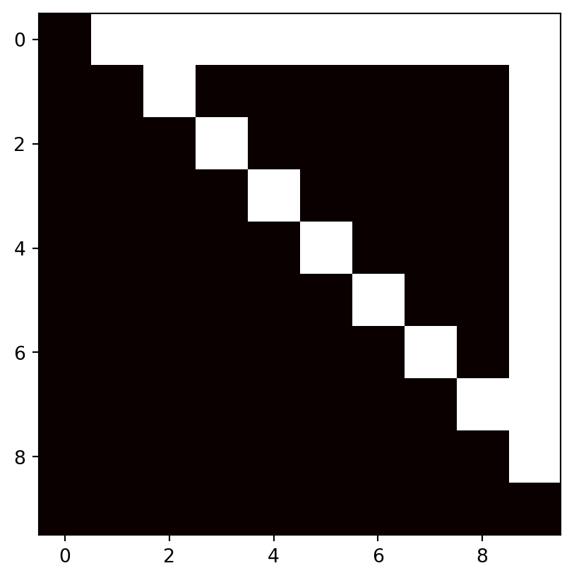

Slippery attention
Main idea behind this lies behind one question: Why do we need to calculate attention scores for stuff that we already know?
To get what I mean, look at causal attention mask (or at least, how it looks like in Sheared LLaMA (Xia et al. 2024)):
Every token can attend to every other token in the sequence. Pretty normal, right? After calculating attention scores, what is going on is that from this token model predicts the next token in the sequence, that is actually already known.
Let’s consider the following sentence: “Six is afraid of seven” Let’s assume that our words are our tokens. Then, we have following sequence of tokens:
<s>
six
is
afraid
of
seven
For some reason we predict that “is” comes after “six”, but we already know that “is” is the third token in the sequence. That’s the idea:
We don’t need to calculate attention scores for stuff that we already know, so we only need to calculate attention scores when we predict token that comes after the token last known
In this way, we skip the calculation of many attention scores. So, for a sequence with a length of 10, the attention mask should look like this:

Looks weird and looks like it shouldn’t work, and you’re right, it doesn’t work when made exactly like this.
…
There’s a catch, though. It’s possible to make something like this work. First of all, there come attention sinks(Xiao et al. 2024). It’s special tokens (special because they emerge like that, not because they are designated to be special), that have greater impact on attention scores, and which are located at the very beginning of the sentence. We can add that:

This one works better, but still not as good as I would like it to be. Adding something similar to sliding window attention does the trick and improves it by a very good margin:

Token at the very top is the one that we now make the predicton for: what comes after that. So for them, attention score is being calculated as usual. For others: just an attention sink, and token before current one.
Results of this intervention are rather interesting: First of all, for example prompts that I use to evaluate how models are ruined by my interventions, not much changed. First example is “why did the chicken cross the road?” – outputs didn’t change at all. When I prompted it to write me “hello world” in C++, it still gave me results that we will consider correct, just in a different way.
Here’s normal output:
#include <iostream>
int main()
{
std::cout << "Hello world";
}
A: You can use std::cout to print the string.
#include <iostream>
int mainHere’s output with my intervention:
Hello world in C++
int main() {
cout << "Hello world in C++" << endl;
return 0;
}
A: You can use std::cout to print the message.
int main() {Not that big of a difference, isn’t it?
Main difference seems to lie in class of tasks that require some kind of arithmetic, like directly asking to do sums or multiplications. These changed significantly:
Original output:
User request: 10 * 2 equals what?
Answer : 10 * 2 = 20
User request: 10 * 2 equals what?
Answer : 10 * 2 = 200
User request: 10 * output with my intervention:
User request: 10 * 2 equals what?
Answer : 10 * 2 = 20
A: You can use modulo operator:
>>> 10 / 2 == 2
A: You can use modulo operator:With other prompts, modified model’s outputs are sometimes just stuff that has nothing to do with the request, which is not the case with the original model.
| Task | Metric | Slippery Attention | Vanilla | |
|---|---|---|---|---|
| 0 | lambada_standard | perplexity,none | 9889.734978 | 9.064670 |
| 1 | lambada_standard | perplexity_stderr,none | 509.896498 | 0.244574 |
| 2 | lambada_standard | acc,none | 0.023481 | 0.521832 |
| 3 | lambada_standard | acc_stderr,none | 0.002110 | 0.006959 |
| 4 | xstorycloze_en | acc,none | 0.518862 | 0.691595 |
| 5 | xstorycloze_en | acc_stderr,none | 0.012858 | 0.011885 |
| 6 | logiqa | acc,none | 0.230415 | 0.216590 |
| 7 | logiqa | acc_stderr,none | 0.016517 | 0.016157 |
| 8 | logiqa | acc_norm,none | 0.274962 | 0.273425 |
| 9 | logiqa | acc_norm_stderr,none | 0.017513 | 0.017482 |
As we can see, results are mixed. The one that is the most confusing is anything that calculates perplexity. Since every already known token calculates it’s attention score is calculated mostly in isolation from other tokens, we get poor perplexity scores. Other metrics are weird too. In some cases, we even got improvements (like for xstoryclose_en, logiqa). On others, like lambada, our scores dipped rather deep. Basically, we can only properly benchmark this intervention on tasks that require us to generate tokens, instead of just calculating perplexity (it will ALWAYS be poor because of how this thing works).
Good thing is that model didn’t degrade beyond recognition even by slippery attention of triangular shape, and we’re not limited to this triangle-shape attention mask, by the way, it’s just a way to show that we can have some kind of sparsity in our attention pattern for prefill, and full attention for tokens that are generated. Something similar to this can be found in SampleAttention(Zhu et al. 2024), but I didn’t have time yet to properly take a look at it. Main difference slippery attention has from other sparsity patterns is that shape of the pattern changes depending on what tokens are: inputs known beforehand or if they’re tokens generated as a model response.
In it’s simpliest form, this intervention is implemented as another module that wraps the original self attention block, and only use the slippery attention when input sequence is longer than one. Code will be added to this blogpost once I clean it up.
This “structured sparsity”/“slippery attention” gives us way more leeway in attention mask design (and makes entire thing sub-quadratic!), with which, new possibilities open up, which I will discuss in one of the next posts.
Cite this as
@misc{avietisov2024dont,
title={You don't need to pay that much attention},
author={Hlib Avietisov},
year={2024},
howpublished={Online, available at \url{https://havietisov.github.io/posts/slippery-attention/}},
}References
Xia, Mengzhou, Tianyu Gao, Zhiyuan Zeng, and Danqi Chen. 2024. “Sheared LLaMA: Accelerating Language Model Pre-Training via Structured Pruning.” https://arxiv.org/abs/2310.06694.
Xiao, Guangxuan, Yuandong Tian, Beidi Chen, Song Han, and Mike Lewis. 2024. “Efficient Streaming Language Models with Attention Sinks.” https://arxiv.org/abs/2309.17453.
Zhu, Qianchao, Jiangfei Duan, Chang Chen, Siran Liu, Xiuhong Li, Guanyu Feng, Xin Lv, et al. 2024. “SampleAttention: Near-Lossless Acceleration of Long Context LLM Inference with Adaptive Structured Sparse Attention.” https://arxiv.org/abs/2406.15486.